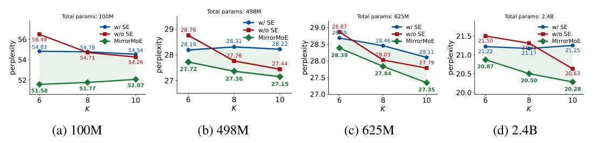
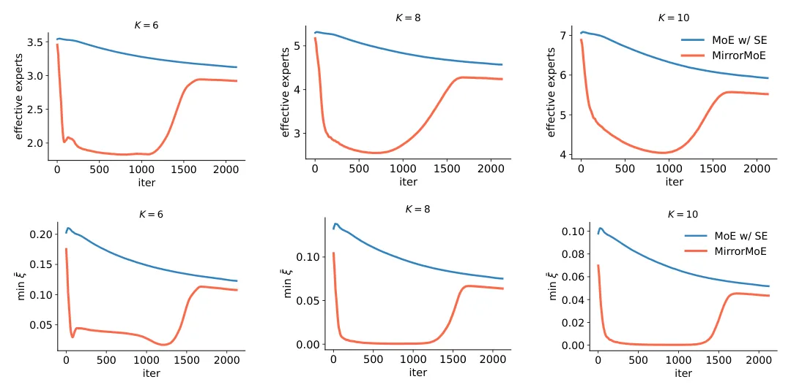

O contexto: Escalabilidade e a arquitetura MoE moderna
Os modelos Mixture-of-Experts (MoE) tornaram-se fundamentais para escalar Large Language Models (LLMs) a trilhões de parâmetros. Diferente dos modelos densos, onde todas as camadas processam cada token, os MoEs adotam um paradigma de computação condicional esparsa. Isso significa que, para cada token de entrada, apenas um subconjunto pequeno de especialistas (sub-redes feedforward) é ativado. Essa arquitetura permite que o custo computacional durante a inferência cresça sublinearmente em relação ao número total de parâmetros, mantendo a capacidade de aprendizado de modelos massivos.
Arquiteturas MoE modernas, como as usadas em DeepSeek, Kimi e Qwen, evoluíram além do design básico. Elas incorporaram duas tendências arquiteturais principais. A primeira é a segmentação fina de especialistas (fine-grained expert segmentation). Em vez de ter poucos especialistas, esses modelos utilizam um número muito maior de especialistas totais (E) e também ativam mais especialistas por token (K). Por exemplo, é comum ver configurações como (E=64, K=8) em vez de (E=8, K=1). Isso aumenta exponencialmente o espaço de combinações de especialistas disponíveis, teoricamente permitindo representações de token mais expressivas.
A segunda tendência é a introdução de especialistas compartilhados (shared experts). Diferente dos especialistas roteados, que são ativados seletivamente, os especialistas compartilhados são ativados para todos os tokens. Eles capturam conhecimento comum que seria aprendido redundantemente pelos especialistas roteados, permitindo que estes últimos se dediquem mais à especialização. A combinação dessas duas escolhas tornou-se padrão em MoEs de última geração, mas os autores deste paper identificam que a interação entre elas pode ser problemática.
O problema: O dilema de exploração no roteamento
O objetivo central do treinamento de um MoE é a exploração do roteamento. Durante o pré-treinamento, o roteador precisa buscar combinações de especialistas alternativas para identificar as rotas (quais especialistas ativar) que são (quase) ótimas para cada token. A segmentação fina amplia drasticamente esse espaço de exploração. O número de subconjuntos de especialistas possíveis aumenta de 8 no caso (E=8, K=1) para aproximadamente 4,4 bilhões no caso (E=64, K=8). Para realizar o potencial expressivo dessa segmentação fina, o modelo precisa explorar esse espaço combinatorialmente maior.
No entanto, a presença de especialistas compartilhados introduz uma assimetria durante o pré-treinamento. Os especialistas compartilhados tendem a dominar as representações aprendidas dos tokens, deixando os especialistas roteados com influência menor na saída da camada. Como resultado, mesmo quando diferentes especialistas roteados são ativados, a variação nas características aprendidas é limitada. Isso torna as rotas alternativas difíceis de distinguir para o roteador, minando o objetivo da exploração.
Essa tensão é o que os autores chamam de 'dilema de exploração'. A necessidade de exploração é maior devido à segmentação fina (espaço de roteamento ampliado), mas a capacidade de exploração é reduzida pelos especialistas compartilhados (baixa variabilidade nas representações). Consequentemente, a expressividade adicional oferecida pela segmentação fina pode não ser totalmente realizada na prática, e os benefícios dos especialistas compartilhados também podem ser diminuídos.

A solução: MirrorMoE e a supressão adaptativa
Para resolver esse dilema, os autores propõem o MirrorMoE. A ideia central não é aumentar a complexidade do roteador, mas sim reduzir o espaço de exploração para que ele seja compatível com a capacidade de exploração do modelo atual. O MirrorMoE faz isso através da supressão adaptativa de especialistas desnecessários, ajustada por token. Em vez de permitir que o roteador escolha entre um espaço enorme de especialistas roteados, o método identifica e suprime aqueles que não são essenciais para a representação atual do token.
Tecnicamente, o MirrorMoE introduz um mecanismo que modula a ativação dos especialistas roteados com base na relevância específica do token. Isso efetivamente 'encolhe' o espaço de exploração dinamicamente. Ao eliminar especialistas que não contribuem significativamente para a representação do token, o método aumenta a variabilidade relativa das representações geradas pelos especialistas restantes. Isso facilita para o roteador distinguir entre rotas alternativas e encontrar combinações mais eficazes.
Um aspecto crucial do MirrorMoE é sua adaptabilidade. Ele não aplica uma redução fixa ou global. Em vez disso, a supressão é ajustada por token e por camada, permitindo que o modelo se adapte às necessidades específicas de cada entrada. Isso é contrastado com abordagens mais simples que apenas reduzem o número de especialistas ativados de forma estática ou seguindo um agendamento temporal simples, sem considerar a complexidade da entrada.

Implementação e hiperparâmetros
O MirrorMoE opera modificando a probabilidade de ativação dos especialistas. Durante o treinamento, um agendamento (schedule) é aplicado para controlar a intensidade da supressão. Os autores testaram diferentes agendamentos para o parâmetro de supressão, incluindo constante, linear e cosseno. O agendamento cosseno, com um valor inicial de 0.4, apresentou o melhor desempenho, sugerindo que uma supressão mais suave no início e mais forte no final é benéfica.
A eficiência computacional é outro ponto importante. Apesar de introduzir uma operação adicional de softmax na camada de roteamento, o MirrorMoE não aumenta significativamente o tempo de treinamento por iteração. Na verdade, há uma leve redução no tempo, o que sugere que a abordagem melhora o balanceamento de carga entre os especialistas. Um melhor balanceamento significa que menos especialistas ficam ociosos ou sobrecarregados, otimizando o uso da hardware durante o treinamento distribuído.
A adaptabilidade do MirrorMoE é demonstrada ao compará-lo com métodos que apenas aumentam progressivamente o número de especialistas ativados (K) ao longo do treinamento, sem considerar a entrada específica. Esses métodos básicos, que usam um K fixo para todos os tokens e camadas em um dado momento, não alcançam o desempenho do MirrorMoE. Isso valida que a supressão adaptativa por token é o componente chave para resolver o dilema de exploração.
Resultados experimentais: Perplexidade e escalabilidade
Os autores avaliaram o MirrorMoE em modelos com escalas variadas, de 100M a 2.4B de parâmetros totais. Os resultados mostram que o MirrorMoE consistently melhora a perplexidade em comparação com MoEs padrão (vanilla) e MoEs com especialistas compartilhados sem a técnica de MirrorMoE. Em modelos com especialistas compartilhados, o MirrorMoE permite que eles superem seus contrapartes sem especialistas compartilhados, algo que não acontece no treinamento padrão quando K é grande.
Um achado importante é que, com o MirrorMoE, a perplexidade diminui consistentemente à medida que K aumenta. Isso indica que a expressividade adicional habilitada pela segmentação fina (maior K) é realmente realizada. Em contraste, nos MoEs padrão com especialistas compartilhados, aumentar K além de um certo ponto pode levar a uma degradação de desempenho devido ao dilema de exploração não resolvido. O MirrorMoE remove essa barreira, permitindo que a escalabilidade do número de especialistas seja aproveitada plenamente.
Os ganhos são observados em todas as escalas testadas. Para o modelo de 2.4B, o MirrorMoE apresenta uma melhoria significativa em relação ao modelo base. Isso sugere que o dilema de exploração se torna mais pronunciado em modelos maiores e com espaços de roteamento mais amplos, e que o MirrorMoE é particularmente benéfico nesses cenários. A técnica não apenas corrige um problema de treinamento, mas também libera o potencial de modelos ainda maiores e mais complexos.
Desempenho em tarefas downstream e validação
Para validar a hipótese de que o dilema de exploração é especificamente causado pela interação entre especialistas compartilhados e segmentação fina, os autores aplicaram o MirrorMoE a MoEs sem especialistas compartilhados. Nesse caso, o MirrorMoE performou de forma comparável ao treinamento vanilla. Isso é consistente com a análise: sem especialistas compartilhados, o dilema de exploração é menos pronunciado, pois não há a dominância das representações que suprime a variabilidade dos especialistas roteados. Portanto, não há necessidade significativa de reduzir o espaço de exploração.
Essa ablação é crucial porque demonstra que o MirrorMoE não é uma melhoria genérica para todos os MoEs, mas uma solução específica para um problema arquitetural bem definido. Ele resolve a tensão entre a necessidade de exploração (devido a K alto) e a capacidade de exploração (reduzida por especialistas compartilhados). Quando essa tensão não existe, a técnica é neutra, o que é um sinal de robustez e precisão na motivação do método.
Limitações e direções futuras
Apesar dos resultados positivos, o paper reconhece limitações. A abordagem atual foca em reduzir o espaço de exploração. Uma direção futura promissora é melhorar a própria estratégia de roteamento para permitir uma exploração mais eficiente, em vez de apenas restringir o espaço. Isso poderia envolver mecanismos de roteamento mais sofisticados que aprendem a explorar o espaço combinatorial de forma mais inteligente, em vez de suprimir partes dele.
Outra consideração é o custo computacional adicional, embora tenha sido observado como leve. Em escalas extremamente grandes, onde o tempo de treinamento é crítico, qualquer overhead adicional deve ser cuidadosamente gerenciado. Além disso, o agendamento dos hiperparâmetros (como o rho) foi otimizado empiricamente. Uma análise teórica mais profunda sobre como escolher esses hiperparâmetros em função do tamanho do modelo e do espaço de roteamento poderia tornar a técnica mais fácil de aplicar sem ajuste fino.
Finalmente, o paper foca em modelos de linguagem baseados em transformadores com camadas MoE. A generalização da técnica para outras arquiteturas ou domínios (como visão computacional) não foi explorada. No entanto, a lógica do dilema de exploração pode ser relevante em outros contextos onde a esparsidade e a especialização são combinadas. Os autores deixam em aberto a questão de como integrar o MirrorMoE com outras técnicas de otimização de MoEs, como balanceamento de carga avançado ou regularização de especialistas.
Conclusão
Este paper identifica e resolve um dilema fundamental no design de MoEs modernos: a tensão entre a expressividade da segmentação fina e a estabilidade dos especialistas compartilhados. O MirrorMoE oferece uma solução prática e eficaz, adaptando o espaço de exploração para corresponder à capacidade do modelo. Os resultados mostram melhorias consistentes em perplexidade e desempenho em tarefas downstream, validando a importância de considerar a dinâmica de exploração no treinamento de modelos esparsos.
Para engenheiros de machine learning e pesquisadores que trabalham com LLMs escaláveis, o MirrorMoE destaca a necessidade de ir além da simples adição de especialistas e compartilhamento. A interação entre esses componentes pode criar gargalos de aprendizado que não são óbvios à primeira vista. Ao entender e mitigar o dilema de exploração, é possível extrair mais valor da arquitetura MoE, permitindo modelos mais grandes e expressivos sem comprometer a qualidade do treinamento.
O que fica
- Modelos MoE modernos combinam segmentação fina e especialistas compartilhados, mas isso reduz a variabilidade das representações, prejudicando a exploração do roteamento.
- O MirrorMoE suprime adaptativamente especialistas desnecessários por token, reduzindo o espaço de exploração e permitindo que a maior expressividade seja realizada.
- Experimentos mostram ganhos consistentes de perplexidade e desempenho em tarefas downstream em escalas de 100M a 2.4B de parâmetros.
- A abordagem é específica para MoEs com especialistas compartilhados; em modelos sem eles, o ganho é insignificante, validando a hipótese do dilema de exploração.
Paper original: Rethinking Routing Exploration in Modern Mixture-of-Experts
Comentários
Nenhum comentário ainda. Seja o primeiro.